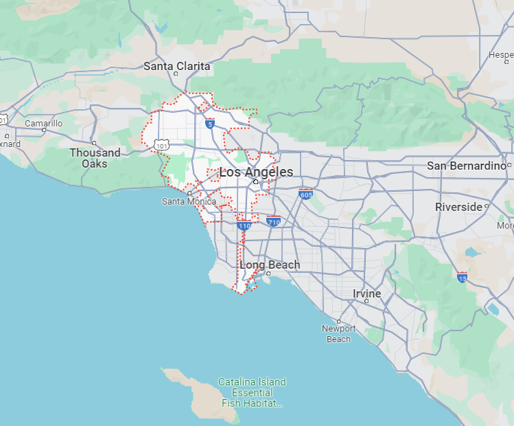
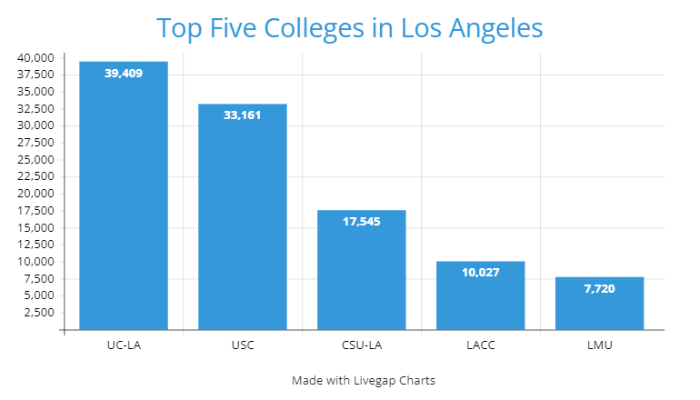

Quick Facts
- Population: 3,822,238 (2022)
- Classification:
- Urban: 100%
- Rural: 0%
- Region: Southern California
- Incorporated: April 4th, 1850
- Median Household Income (2022):
- California: $91,551
- Los Angeles: $76,135
| 2019 | 2020 | 2022 | |
|---|---|---|---|
| Murders | 258 | 351 | 387 |
| Assaults | 17,216 | 18,535 | 20,178 |
| Thefts | 66,253 | 50,990 | 62,665 |
Top Five Colleges in Los Angeles
by Full-Time Enrollment- University of California, Los Angeles
- University of Southern California
- California State University, Los Angeles
- Los Angeles City College
- Loyola Mayrmount University
